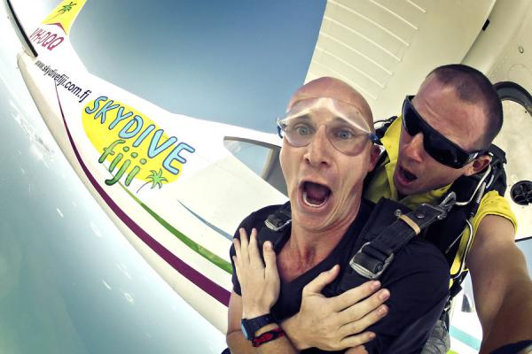
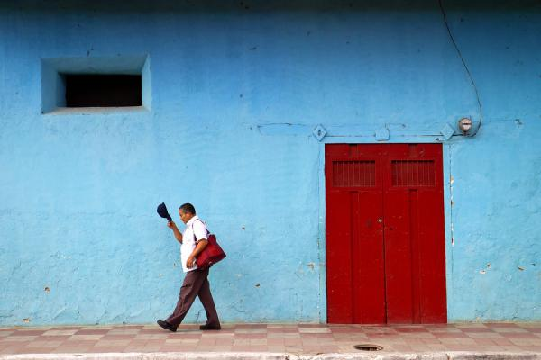
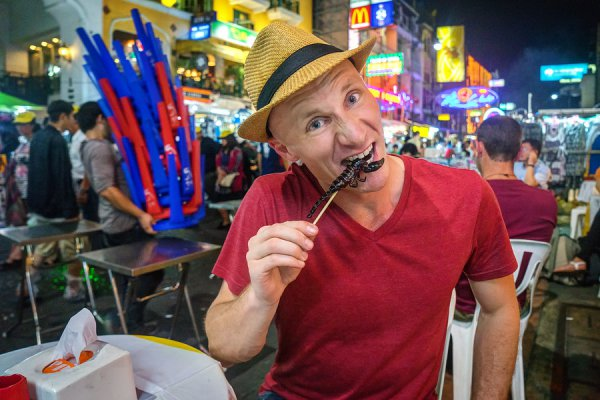
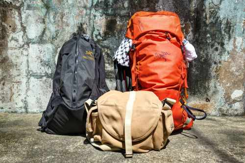

TRAVEL TIPS1. Patience Is ImportantDon't sweat the stuff you can't control. Life is much too short to be angry & annoyed all the time. Did you miss your bus? No worries, there will be another one. ATMs out of money? Great! Take an unplanned road trip over to the next town and explore. Sometimes freakouts happen regardless. Just take a deep breath and remind yourself that it could be worse. 2. Wake Up EarlyRise at sunrise to have the best attractions all to yourself while avoiding crowds. It's also a magical time for photos due to soft diffused light, and usually easier to interact with locals. Sketchy areas are less dangerous in the morning too. Honest hardworking people wake up early; touts, scammers, and criminals sleep in. 3. Laugh At YourselfYou will definitely look like a fool many times when traveling to new places. Rather than get embarrassed, laugh at yourself. Don't be afraid to screw up, and don't take life so seriously. Once a whole bus full of Guatemalans laughed with glee when I forced our driver to stop so I could urgently pee on the side of the road. Returning to the bus and laughing with them gave me new friends for the rest of the journey. 4. Stash Extra CashCash is king around the world. To cover your ass in an emergency, make sure to stash some in a few different places. I recommend at least a couple hundred dollars worth. If you lose your wallet, your card stops working, or the ATMs run out of money, you'll be glad you did. Some of my favorite stash spots include socks, under shoe inserts, a toiletry bag, around the frame of a backpack, even sewn behind a patch on your bag. 5. Meet Local PeopleMake it a point to avoid other travelers from time to time and start conversations with local people. Basic English is spoken widely all over the world, so it's easier to communicate than you might think, especially when you combine hand gestures and body language. Learn from those who live in the country you're visiting. People enrich your travels more than sights do. 6. Pack A ScarfI happen to use a shemagh, but sarongs also work great. This simple piece of cotton cloth is one of my most useful travel accessories with many different practical applications. It's great for sun protection, a makeshift towel, carrying stuff around, an eye mask, and much more. I can't tell you how many times a scarf has come in handy around the world. 7. Observe Daily LifeIf you really want to get a feel for the pulse of a place, I recommend spending a few hours sitting in a park or on a busy street corner by yourself just watching day to day life happen in front of you. Slow down your train of thought and pay close attention to the details around you. The smells, the colors, human interactions, and sounds. It's a kind of meditation — and you'll see stuff you never noticed before. 8. Back Everything UpWhen my laptop computer was stolen in Panama, having most of my important documents and photos backed up saved my ass. Keep both digital and physical copies of your passport, visas, driver's license, birth certificate, health insurance card, serial numbers, and important phone numbers ready to go in case of an emergency. Backup your files & photos on an external hard drive as well as online with software like Backblaze. 9. Take Lots Of PhotosYou may only see these places & meet these people once in your lifetime. Remember them forever with plenty of photos. Don't worry about looking like a “touristâ€. Are you traveling to look cool? No one cares. Great photos are the ultimate souvenir. They don't cost anything, they're easy to share with others, and they don't take up space in your luggage. Just remember once you have your shot to get out from behind the lens and enjoy the view. 10. There's Always A WayNothing is impossible. If you are having trouble going somewhere or doing something, don't give up. You just haven't found the best solution or met the right person yet. Don't listen to those who say it can't be done. Perseverance pays off. I can't tell you how many times I've been told what I want isn't possible, only to prove it wrong later when I don't listen to the advice and try anyway. 11. Smile & Say HelloHaving trouble interacting with locals? Do people seem unfriendly? Maybe it's your body language. One of my best travel tips is to make eye contact and smile as you walk by. If they smile back, say hello in the local language too. This is a fast way to make new friends. You can't expect everyone to just walk around with a big stupid grin on their face. That's your job. Usually all it takes is for you to initiate contact and they'll open up. 12. Splurge A BitI'm a huge fan of budget travel, as it allows you to travel longer and actually experience more of the fascinating world we live in rather than waste your hard-earned money on stuff you don't need. In fact you can travel many places for $50 a day with no problems. That said, living on a shoestring gets old after a while. It's nice (and healthy) to go over your budget occasionally. Book a few days at a nice hotel, eat out at a fancy restaurant, or spend a wild night on the town. 13. Keep An Open MindDon't judge the lifestyles of others if different from your own. Listen to opinions you don't agree with. It's arrogant to assume your views are correct and other people are wrong. Practice empathy and put yourself in someone else's shoes. Embrace different possibilities, opportunities, people, suggestions and interests. Ask questions. You don't have to agree, but you may be surprised what you'll learn. 14. Try CouchsurfingCouchsurfing.org is a large online community of travelers who share their spare rooms or couches with strangers for free. If you truly want to experience a country and it's people, staying with a local is the way to go. There are millions of couchsurfers around the world willing to host you and provide recommendations. Expensive hotels are not the only option, there are all kinds of cheap travel accommodation options out there. 15. Volunteer OccasionallyMake it a point to volunteer some of your time for worthwhile projects when traveling. Not only is it a very rewarding experience, but you'll often learn more about the country and its people while also making new friends. There's a great site called Grassroots Volunteering where you can search for highly recommended volunteer opportunities around the world |
Contact us
|
HOME |
DESTINATIONS |
BOOKING |
TRAVEL TIPS |
ABOUT US |
FAQs
Recruitment | Reference In partnership with 


|